.png) 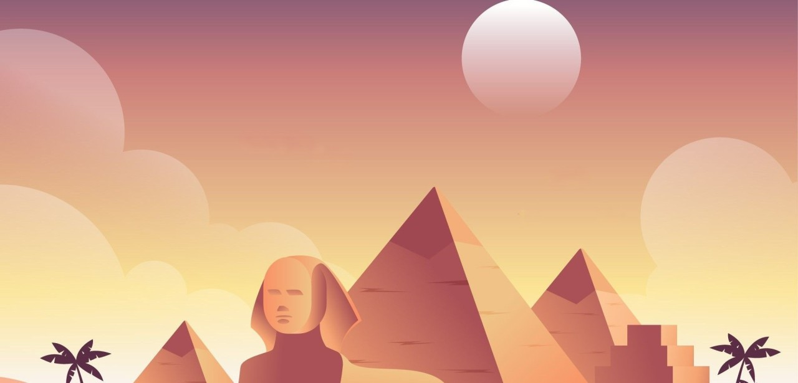
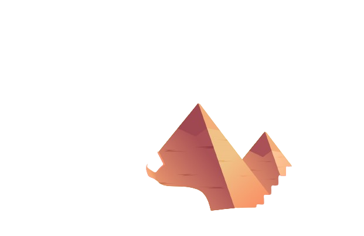
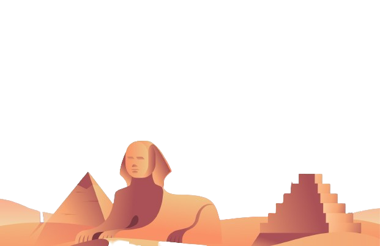
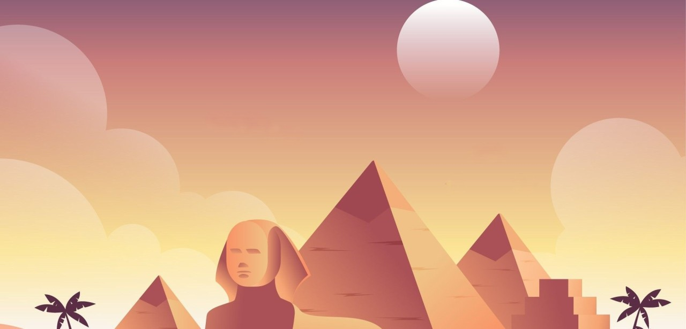
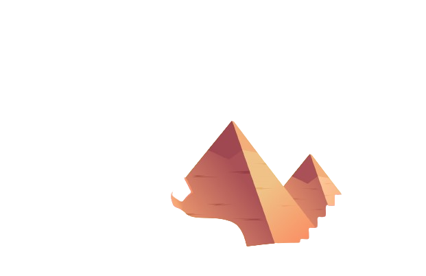
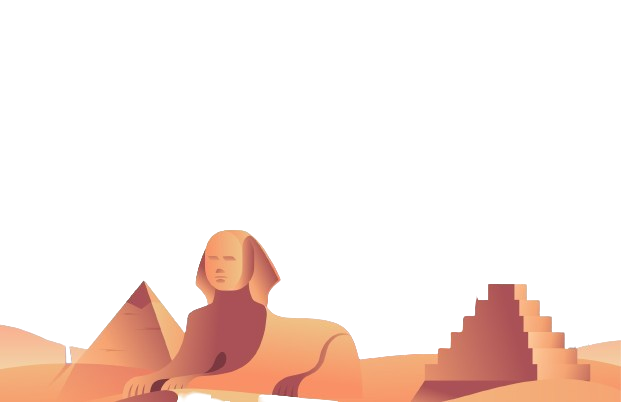
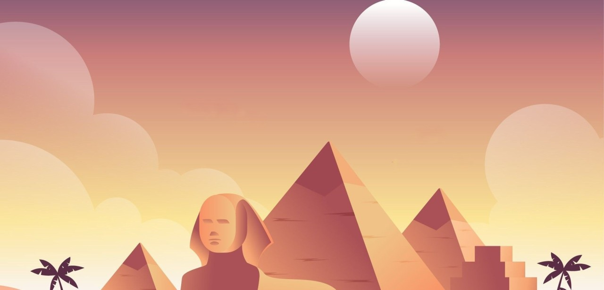
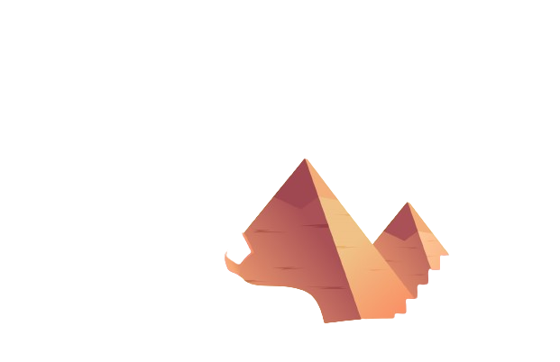
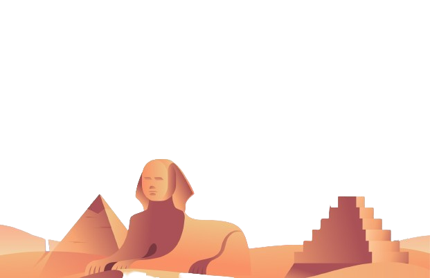
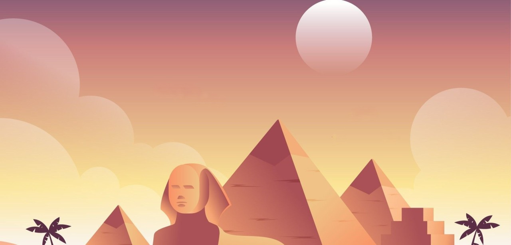
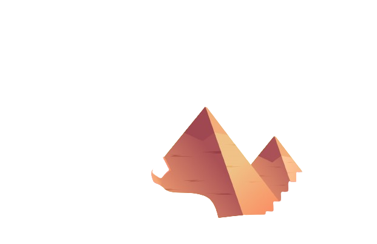
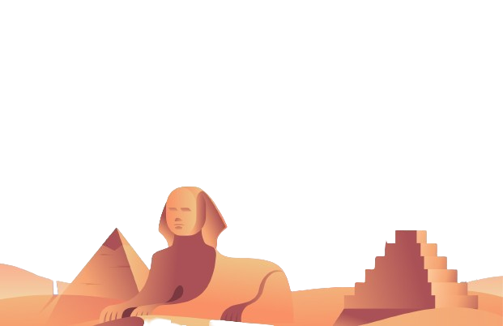
Introduce Your children to the history of Egypt through Sinuhe. we are web site that is educational cheerful . Let kids explore the wonders of ancient Egypt, from the pyramids to the pharaohs, in a fun and interactive way. With colorful images , Simulation videos , interesting facts, and interactive games, this website will spark their curiosity and help them learn about this fascinating civilization in an engaging manner. Let them embark on a virtual journey through time and discover the mysteries of Egypt's past while having fun and expanding their knowledge.
1. On the Sinuhe website, we try to convey the complete and correct facts about the history of Egypt to children in a fun, educational way, hoping for the new generation to realize the extent of the strength and greatness of Egyptian history.
2. The site also contains interactive quizzes, fun facts, colorful illustrations, and engaging videos to make learning about Egyptian history fun and educational for children of all ages.
3. Through us, children can explore the secrets of the Nile River, the importance of hieroglyphics, and the daily life of the ancient Egyptians, creating a sense of wonder and appreciation for this ancient civilization.